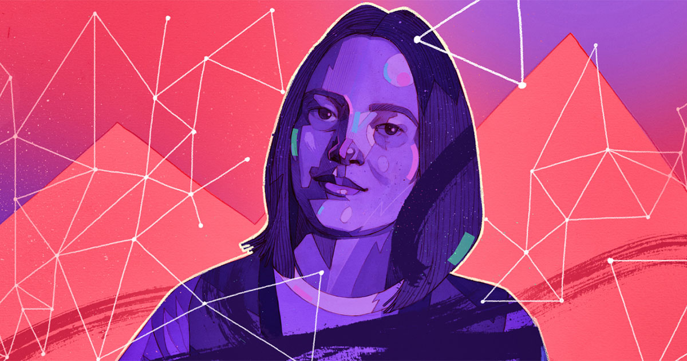
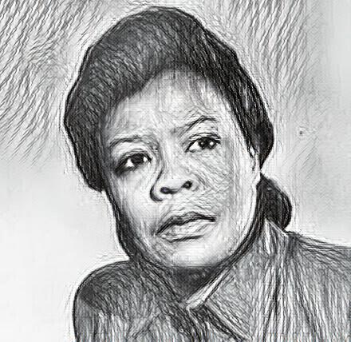

Pattie Maes: Kylie's Tech Hero
Pattie Maes is my tech hero because she invented the “If you like this, you might also like this” algorithm, revolutionizing recommendation systems on platforms like Netflix and Spotify. I couldn't imagine making a great playlist without it! In fact, I’ve found some of my favorite music because of this.
Pattie Maes is the Germeshausen Professor of Media Arts and Sciences at the MIT Media Lab, where she conducts research at the intersection of Human-Computer Interaction and Artificial Intelligence. She is also an affiliated faculty member at MIT's Center for Neuro-Biological Engineering. In the 90s, she pioneered the concept of Software Agents, which has had a lasting impact on the field of AI and technology. Her current work continues to explore how software systems and novel devices can augment human capabilities, especially in areas like memory, learning, decision-making, and wellbeing.
Her work has earned her many accolades, including recognition in Time Magazine's annual list of inventions of the year, and she has been selected as one of the 50 most influential designers by Fast Company in 2011. Her AI paper also won the “classic paper 2012” prize from the American Association for Artificial Intelligence, awarded to the most influential AI paper of that year.
Pattie Maes has also been honored with numerous awards throughout her career, including:
- Netguru's Hidden Heroes (2022) – Recognizing the people who shaped technology.
- Lifetime Achievement Award by the Massachusetts Interactive Media Council (2000).
- Honorary Doctorates from the Vrije Universiteit Brussel and Open Universiteit.
- World Economic Forum title of “Global Leader for Tomorrow”
In addition to her academic achievements, Pattie Maes is an accomplished entrepreneur. She co-founded several venture-backed companies, including Firefly Networks (sold to Microsoft), Open Ratings (sold to Dun & Bradstreet), and Tulip Co (privately held). Her work has left an indelible mark on both the academic world and the tech industry.
Her academic journey started with a BA and PhD in Computer Science and Artificial Intelligence from the Vrije Universiteit Brussel in Belgium. She went on to join the MIT Artificial Intelligence Lab as a visiting professor and research scientist, working alongside AI luminaries such as Marvin Minsky and Rodney Brooks.
Pattie Maes is not only an influential academic but also a pioneering entrepreneur whose work has shaped the future of technology. Her innovations continue to impact the way we live and interact with digital systems, and I find her contributions truly inspiring.
Algorithmic Inheritance: Surname Bias in AI Decisions
Pattie Maes' work on Algorithmic Inheritance is another crucial contribution to the field of AI, especially in the context of bias and inequality. Her study on surname bias explores how AI systems reinforce intergenerational inequality based on surnames, which often carry implicit markers of social status, wealth, and lineage.
This research is groundbreaking, as it is the first study to examine whether and how surnames influence AI-driven decision-making, particularly in areas such as hiring recommendations, leadership appointments, and loan approvals. By analyzing 72,000 evaluations of 600 surnames from the United States and Thailand, the study classifies names into four categories: “Rich”, “Legacy”, “Normal”, and Variant (phonetically similar names).
The findings reveal that elite surnames consistently increase AI-generated perceptions of power, intelligence, and wealth, which then influence AI-driven decisions in high-stakes contexts. The research also identifies that perceived intelligence is a key mechanism through which surname biases impact AI decision-making.
While providing objective qualifications alongside surnames reduces most of these biases, it does not eliminate them entirely—especially when candidate credentials are low. This highlights the need for fairness-aware algorithms and robust policy measures to prevent AI systems from perpetuating systemic inequalities tied to surnames. This often-overlooked bias, compared to more overt characteristics like race or gender, needs to be critically addressed to ensure algorithmic accountability and equity in AI systems.
This research underscores the importance of rethinking AI systems, particularly those designed to uphold meritocratic ideals, to prevent the reinforcement of intergenerational privilege and societal biases.
Marie Van Brittan Brown: Ayra's Tech Hero
Marie Van Brittan Brown is my tech hero because she pioneered the first home security system, a groundbreaking innovation that laid the foundation for modern surveillance technology. Her invention not only provided a sense of safety but also changed how we think about security in our homes.
Marie Van Brittan Brown was an African American nurse living in Jamaica, Queens, New York, in the 1960s. Concerned about the rising crime rates in her neighborhood, she collaborated with her husband, Albert Brown, to develop the security system. The system included a camera that could be adjusted to see who was at the door, a two-way microphone, and a remote control that allowed the user to unlock the door from a distance. This innovative approach not only provided safety but also empowered individuals to take control of their personal security.
Although she passed away in 1999, Marie's legacy continues to influence the security industry. Her invention has inspired countless advancements in home security systems, including video doorbells, motion sensors, and smart home technology. Today, her contributions are recognized in the broader context of tech innovation, particularly regarding how women and people of color have historically contributed to the field.
Some key achievements and recognitions for Marie Van Brittan Brown include:
- Patent for the Home Security System (1966) – The first of its kind, patented alongside her husband.
- National Inventors Hall of Fame – Inducted for her contributions to technology and security.
- Representation in Tech History – Her story is often included in discussions about women inventors and African American contributions to technology.
Marie Van Brittan Brown is a trailblazer whose work has not only changed the way we view home security but also opened doors for future generations of innovators. Her story inspires me to think creatively and address real-world problems through technology.